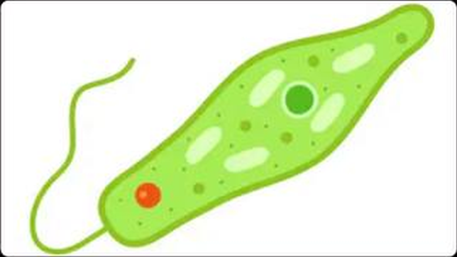
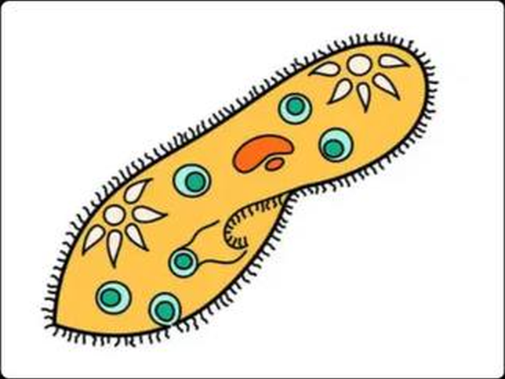
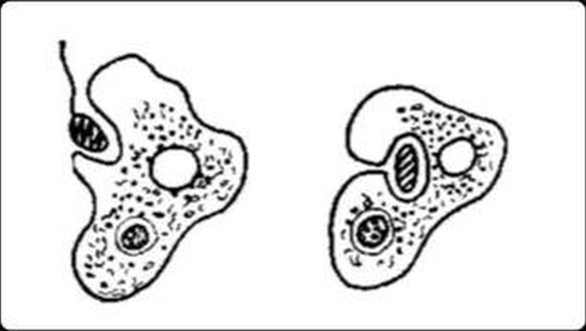
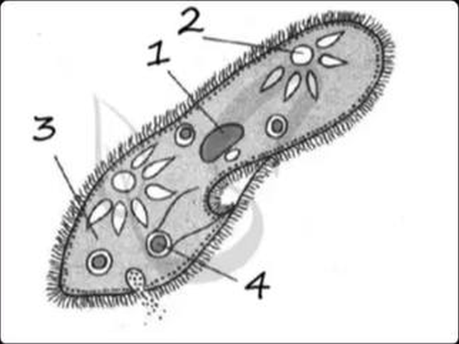
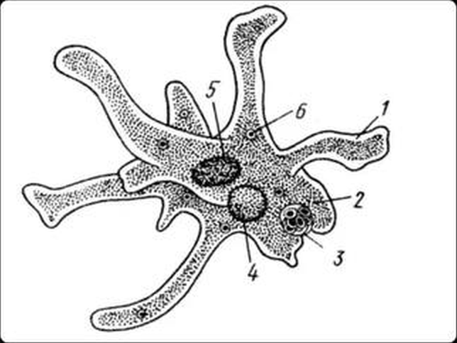
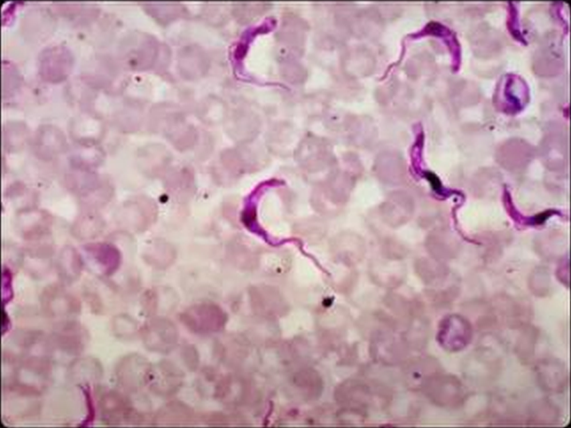
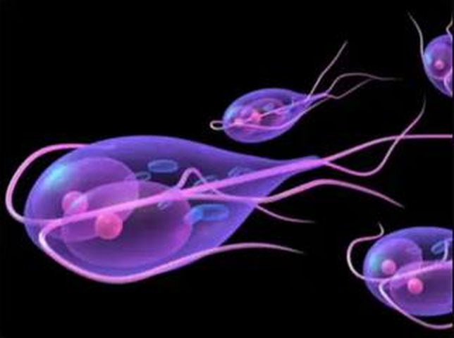
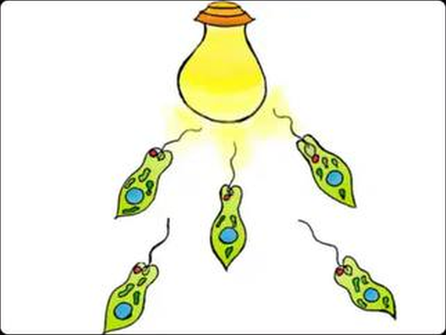

1.Как называются органоиды движения у амёбы обыкновенной?
- АЖгутики
- БПсевдоподии
- ВРеснички
- ГМиофибриллы
2.У какого организма есть стигма?
- ААмёба
- БЭвглена зелёная
- ВИнфузория-туфелька
- ГМалярийный плазмодий
3.Какое из простейших представлено на фотографии?

- АЭвглена зелёная
- БЛейшмания
- ВТрипаносома
- ГАмёба обыкновенная
4.Какие признаки характерны для простейших?
- АОдноклеточность
- БНаличие ядра
- ВНаличие клеточной стенки
- ГНевозможность передвигаться
5.Какое вещество придаёт эвглене зелёный цвет?
- АКрахмал
- БХлорофилл
- ВВода
- ГЖир
6.Какое из простейших является паразитом?
- АЛямблия
- БАмёба обыкновенная
- ВИнфузория-туфелька
- ГРаковинная амёба
7.С помощью чего передвигается данное простейшее?

- АЖгутик
- БРеснички
- ВПсевдоподии
- ГНет органоидов передвижения
8.Какой процесс представлен на данной схеме?

- АФагоцитоз
- БФототаксис
- ВПиноцитоз
- ГЭкзоцитоз
9.Какое свойство живого проявляет эвглена зелёная, двигаясь в сторону более освещённого участка водоёма?
- АРазвитие
- БРазмножение
- ВРаздражимость
- ГНаследственность и изменчивость
10.В какой момент амёба обыкновенная превращается в цисту?
- АПеред делением
- БПеред накоплением питательных веществ
- ВПри чрезмерном размножении
- ГПри наступлении неблагоприятных условий
11.Дыхание у простейших происходит через
- АСократительную вакуоль
- БПорошицу
- ВВсю поверхность тела
- ГПищеварительную вакуоль
12.Какое из простейших вызывает малярию?
- АЭвглена зелёная
- БАмёба дизентерийная
- ВМалярийный плазмодий
- ГАрцелла
13.Какие простейшие принимают участие в образовании мела?
- АЭвглены
- БМалярийные плазмодии
- ВФораминиферы
- ГЛейшмании
14.Какая структура инфузории обозначена цифрой 1?

- АСократительная вакуоль
- БКлеточный рот
- ВПорошица
- ГМакронуклеус
15.Какая структура амёбы обозначена цифрой 1?

- АЯдро
- БПищеварительная вакуоль
- ВЦитоплазма
- ГЛожноножка
16.Благодаря какому органоиду осуществляется фототаксис эвглены зелёной?
- АЦитоплазма
- БХлоропласты
- ВСтигма
- ГПищеварительная вакуоль
17.Какие органоиды не являются органоидами движения?
- АЖгутики
- БХлоропласты
- ВРеснички
- ГСократительная вакуоль
18.Какой органоид Простейших предназначен для удаления излишков жидкости вместе с растворёнными в ней продуктами жизнедеятельности?
- АПорошица
- БЦитоплазма
- ВСократительная вакуоль
- ГПищеварительная вакуоль
19.Какие простейшие изображены на фотографии?

- АЭвглены зелёные
- БТрипаносомы
- ВАмёбы
- ГМалярийные плазмодии
20.Какое простейшее изображено на фотографии?

- АЛямблия
- БТрипаносома
- ВАрцелла
- ГЛейшмания
21.Как называется стадия жизни, которую образуют Простейшие при неблагоприятных условиях?
- АЛожноножка
- БВакуоль
- ВЦиста
- ГКлеточная стенка
22.Какое из простейших вызывает сонную болезнь?
- АТрипаносома
- БЛейшмания
- ВДизентерийная амёба
- ГБалантидий
23.Как называется движение эвглены зелёной в сторону источника света?

- АФагоцитоз
- БФототаксис
- ВГелиотропизм
- ГГеотропизм
24.Какие простейшие имеют минеральный скелет?
- АИнфузории
- БАмёбы
- ВРадиолярии
- ГСпоровики
25.Через какой органоид инфузория-туфелька выбрасывает неперевариваемые остатки пищи?
- АГлотка
- БРотовое отверстие
- ВПорошица
- ГСократительная вакуоль
26.Непостоянную форму тела имеет
- ААмёба
- БЭвглена зелёная
- ВИнфузория-туфелька
- ГИнфузория Балантидий
27.Какое простейшее всегда содержит две сократительные вакуоли?
- ААмёба обыкновенная
- БЭвглена зелёная
- ВВольвокс
- ГИнфузория-туфелька
28.Муха цеце переносит возбудителей сонной болезни, а именно:
- АТрипаносом
- БЛейшманий
- ВЛямблий
- ГДизентерийных амёб
29.Какое из простейших имеет два ядра: микро- и макронуклеусы (большое и малое)?
- ААмёба обыкновенная
- БАрцелла
- ВИнфузория-туфелька
- ГФораминифера
30.Какое простейшее передвигается с помощью одного жгутика?
- АЛямблия
- БЭвглена зелёная
- ВИнфузория-туфелька
- ГБалантидий